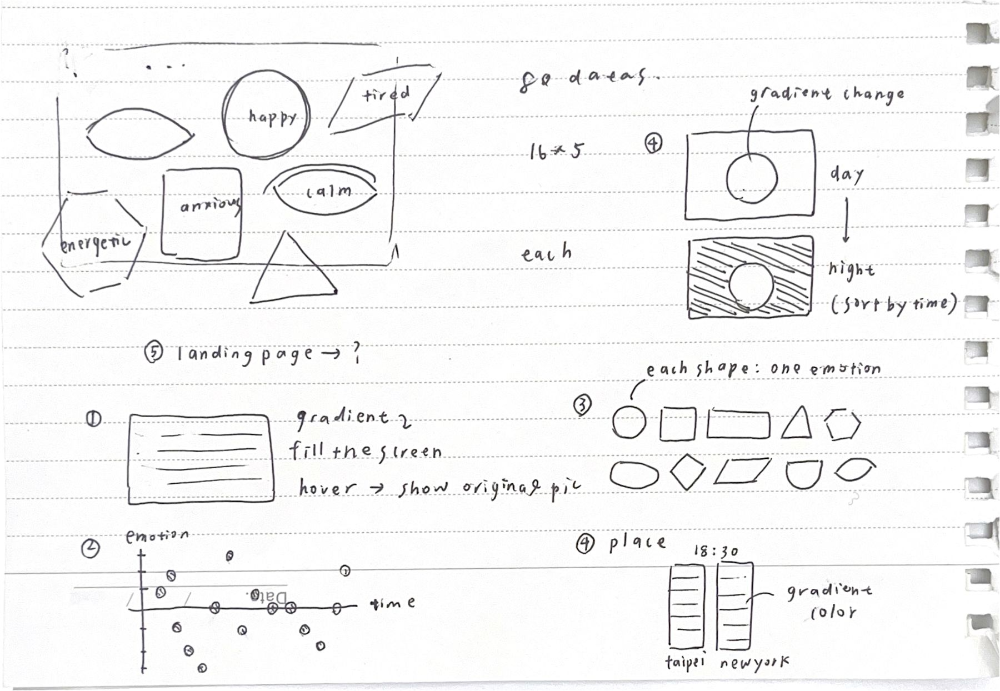

03
Feeling to shape
I gave every feeling one shape: happy is a circle, calm an oval, tired a sinking half-circle. In my notebook I also sketched how the pages could work: a gradient that fills the screen, the sky changing from day to night, and Taipei next to New York.
